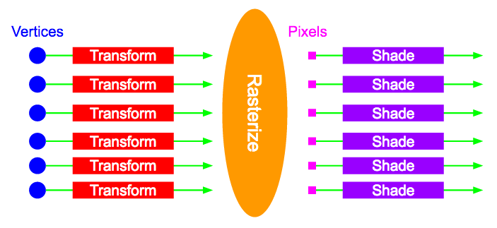

WebGL Application Performance
Optimizing the BioDigital Human
Tarek Sherif
BioDigital
BioDigital's Goals
- Use interactive 3D to make anatomical content engaging
-
Move beyond the anatomy atlas
- Tell stories
- Bring content to life
- Map data to and from 3D models
- Make it all widely accessible through the Web
The BioDigital Human
-
3D content library
- 5000+ anatomy objects
- 500+ health conditions
- Rendering engine built on SceneJS
- User-created annotations and custom views
- API for embedding Human content into external websites
Key Clients
- Medical device manufacturers
- Pharmaceutical
- Educational
- Medical students
Some examples
What is WebGL?
- A low-level JavaScript API that provides access to the GPU
- Allows for high-performance, interactive 3D graphics on the Web
Why WebGL?
Pros
- It's everywhere!
- Use HTML/CSS/JavaScript for easy UI
- Integrate into client web sites
- Leverage existing web services
- (Relatively) easy distribution
- (Relatively) easy deployment of updates
In a nutshell...
- Leverage the entire infrastructure of the Web as a platform to create dynamic, high-performance 3D applications
Any downsides?
-
Web UX expectations
- It should be fast
- It should be easy
- It should just work

PERFORMANCE!!!
WebGL Performance considerations
- Download time
- JavaScript performance
- Memory management
- Talking to the GPU
- Shader performance
- Mobile considerations
Download time
- Our content is created in-house by a team of 3D artists
-
Data sets can be large
- All necessary geometry data
- Texture images
- Morph targets for animation
The eternal struggle
-
Artists want it beautiful: big textures, detailed geometry
- Medical accurary is paramount
- Engineers want it to download quickly and not crash on an iPhone
- Tension between anatomical detail and usability
Solutions
- Make sure artists are aware of the size of their content
-
Visual "tricks" to compress detail
-
e.g. Geometric detail versus normal maps
- Avoid downloading data you don't need
JavaScript Performance
- Animation loops exacerbate performance issues
- Many operations run on large geometry arrays
- Prefer fast code to pretty code
- Lazy evaluations
- Cache results
JavaScript Performance
if (transform._dirty) {
transform.matrix.identityMat();
transform.matrix.mulMat4(transform.scale);
transform.matrix.mulMat4(transform.rotation);
transform.matrix.mulMat4(transform.translation);
transform._dirty = false;
}
Memory management
- Memory management in JavaScript is hard
- Garbage collection can throttle performance
- Stability also a concern, especially on mobile
WebGL Considerations
-
Large arrays containing geometry data
- Don't make unnecessary copies!!!
-
Animation loops
- Any allocations will happen 60 times per second
Why is memory management hard?
- Common JS idioms make "hidden" allocations
object.transform({
rotate: {
axis: vec1.cross(vec2).normalize(),
angle: Math.PI / 4
}
});
Uglify for performance!
- Pre-allocate outside the animation loop
var crossVec = new Float32Array(3);
var axisVec = new Float32Array(3);
var rotateParams = { axis: axisVec, angle: 0};
var tranformParams = { rotate: rotateParams };
Uglify for performance!
- Re-use objects and arrays in the animation loop
cross(vec1, vec2, crossvec); // Note the "result" argument
normalize(crossVec, axisVec);
object.transform(transformParams);
Why is memory management hard?
- When is memory allocated?
var a = new Float32Array(4 * 1024 * 1024); // Allocate 16MB.
var b = a.subarray(0, 2 * 1024 * 1024); // No allocation. Reference same memory.
var c = a.slice(0, 2 * 1024 * 1024); // Allocate another 8MB!!!
Why is memory management hard?
Background: How does WebGL work?
- Get WebGL context from a canvas element
- Send geometry data to the GPU
- Run the GPU pipeline
Get WebGL context from a canvas element
var canvas = document.getElementById("the-canvas");
var gl = canvas.getContext("webgl");
Send scene data to the GPU
- Arrays of vertex information that describe the meshes
- Other data describe lights, materials, etc.
Send scene data to the GPU
var buffer = gl.createBuffer();
var aPosition = gl.getUniformLocation(program, "aPosition");
var positionData = new Float32Array(positions);
gl.bindBuffer(gl.ARRAY_BUFFER, buffer);
gl.bufferData(gl.ARRAY_BUFFER, positionData, gl.STATIC_DRAW);
gl.vertexAttribPointer(aPosition, 3, gl.FLOAT, false, 0, 0);
gl.enableVertexAttribArray(aPosition);
(Note the super-concise, expressive API)
The GPU pipeline
-
Several stages that manipulate the mesh data to produce the final image
- Place objects into correct position relative to the camera
- Figure out which pixels are covered by an object
- Color those pixels based on available data
- Some stages are programmable, others are not
The GPU pipeline
The Vertex Shader
- A program you write that gets compiled onto the GPU
- Applied to each vertex in the mesh
- Transforms vertices into "view space" then projects onto the screen
attribute vec4 aPosition;
uniform mat4 uMVP;
void main() {
gl_Position = uPerspective * uView * uModel * aPosition;
}
Rasterization
- Non-programmable
- Figure out which pixels are covered by each object

The Fragment Shader
- Another program you write that gets compiled onto the GPU
- Applied to each pixel covered by an object
- Uses mesh, material and light information to color a pixel
varying vec4 vPosition;
varying vec4 vNormal;
varying vec4 vColor;
uniform vec3 uLightPos;
uniform vec3 uLightColor;
void main() {
vec3 lightDir = normalize(uLightPos - vPosition.xyz);
float l = max(dot(normalize(vNormal), lightDir), 0.0);
gl_FragColor = vec4(l * vColor.rgb * uLightColor, vColor.a);
}
Now do all that 60 times per second!!!
Talking to the GPU
- GL calls are relatively expensive
-
Data has to move between system and GPU memory
- Bandwidth is limited
-
GL calls outside the browser's render cycle can be slow
- Always them inside a
requestAnimationFramecallback
- Always them inside a
Talking to the GPU
- Don't make unnecessary GL calls!
// BAD!!!
requestAnimationFrame(function() {
gl.drawElements(gl.TRIANGLES, numElements, gl.UNSIGNED_SHORT, 0);
});
// GOOD!!!
requestAnimationFrame(function() {
if (sceneDirty) {
gl.drawElements(gl.TRIANGLES, numElements, gl.UNSIGNED_SHORT, 0);
sceneDirty = false;
}
});
Shader Performance
-
Shader programs are invoked a lot!
- Vertex shader: Once per vertex
- Fragment shader: Potentially once per pixel (8.3M invocations on a 4k screen!)
- Micro-optimizations count!
Shader programming idiosyncrasies
-
Generally prefer calculations in the vertex shader (less invocations)
- BUT there's a limited amount of data that can pass from VS to FS
- Looping and conditionals are very bad for shader performance
- Prefer conditional compilation to runtime conditions
Example
Mobile considerations
- Rendering performance and memory can be severely limited on mobile devices
- Can't make assumptions about client capabilities
ARGGGH... APPLE!!!

Mobile considerations
-
Possible to query some properties:
- Certain GL capabilities
- Shader precision
-
Not others:
- GPU memory
Know the Client!
SceneJS.WEBGL_INFO.MAX_VARYING_VECTORS = gl.getParameter(gl.MAX_VARYING_VECTORS);
SceneJS.WEBGL_INFO.MAX_TEXTURE_UNITS = gl.getParameter(gl.MAX_COMBINED_TEXTURE_IMAGE_UNITS);
if (gl.getShaderPrecisionFormat(gl.FRAGMENT_SHADER, gl.HIGH_FLOAT).precision > 0) {
SceneJS.WEBGL_INFO.FS_MAX_FLOAT_PRECISION = "highp";
} else if (gl.getShaderPrecisionFormat(gl.FRAGMENT_SHADER, gl.MEDIUM_FLOAT).precision > 0) {
SceneJS.WEBGL_INFO.FS_MAX_FLOAT_PRECISION = "mediump";
} else {
SceneJS.WEBGL_INFO.FS_MAX_FLOAT_PRECISION = "lowp";
}
Interested in learning more?
- Try out the API! developer.biodigital.com
- Join the NYC WebGL Developers Meetup! meetup.com/NYC-WebGL-Developers
- BioDigital summer internships!